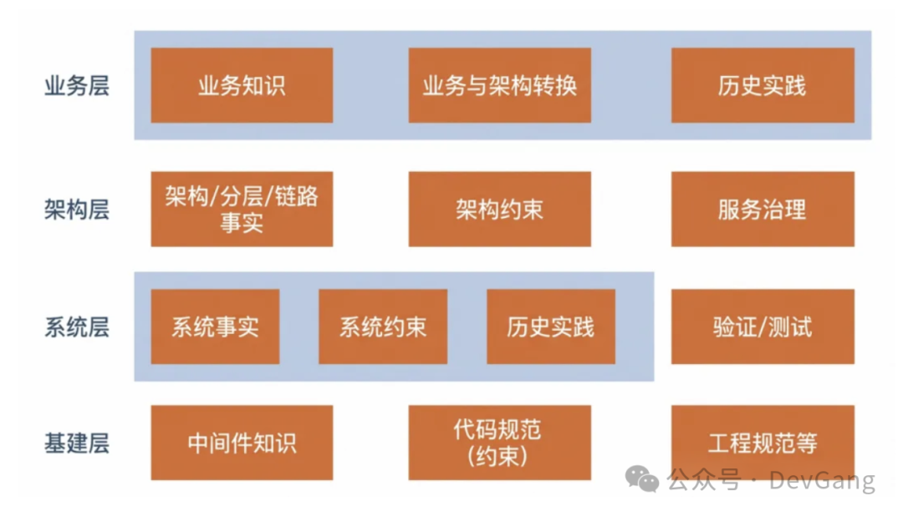

编写测试用例，是我做测试工作最痛苦的一件事情，没有之一。最难受的是把测试点写成“标准”用例。先要写一个让人一目了然的用例标题，还要讲究什么主谓宾造句，曾经为了让标题好看，我还硬加“验证”2 个字前缀。前提条件要把账号数据这些罗列出来。步骤要写清楚每一步干啥，预期也要具体化和量化，不能只写正确。文字写起来啰里啰嗦，写多了头都炸了。
我承认，那些很详尽的测试用例是好的。但是我写不出来，也完全不想写。没有意义。还不如写代码来得痛快。可这是客观要求。只能硬着头皮干。向榜样用例学习。
现在 AI 拯救了我。我已经 3 个月没有手写过用例了。以前花半天才能写完的用例，现在 AI 写好后，10 分钟就优化成可用的了。甚至让 AI 写用例的 SKILL，也是让 AI 写的。
AI 写用例关键是看写出来的效果好不好，这就要看采纳率。采纳率是 100 条用例，你采纳的用例是 80 条，那么采纳率就是 80%，采纳率越高，生成的用例质量就越高。
刚开始用最通用的方式，①prd、②trd、③代码 diff，扔给 AI 让它写。prd 和 trd 如果质量很差，会直接影响用例效果。
这就需要建设知识库。知识是蒸馏来的，包括代码仓库、测试用例、自动化脚本等。知识库的设计可以采用分层模式，下图是阿里技术文章里面的研发视角知识库：

测试的知识库更加侧重于测试分析、测试用例等。还有向量数据库、CRG、知识图谱等高级玩法。这些词语看不懂没关系，发给 AI 让它给你解释，直接让它来实现，我就是这么玩的，Vibe Coding 全程不用写一句代码。
知识库怎么用呢？在生成用例 SKILL 时使用。分析代码 diff 时阅读系统架构和系统功能，设计用例时阅读系统流程和业务规则，评估回归范围时参考历史用例。这些都让 AI 来做。
做好以上这些，生成的用例有些需求采纳率很高，换个需求可能又牛头不对马嘴了。这时需要人工调优。不是我去手改用例，而是在对话框持续交互，XXX 场景怎么设计的，把 XXX 场景的用例补充，用例描述不要涉及太多代码细节。如何提高生成的初始用例的采纳率和稳定性，仍然是一个持续解决的困难问题。 AI 拯救了我，也代替我的工作，除了编写测试用例，以后还会自动执行测试。个人大胆预测，以后测试岗位会越来越少，现在有些公司已经撤掉了测试团队，有些公司已经让测试转开发了。
但淘汰的是公司岗位，并不是淘汰的人。